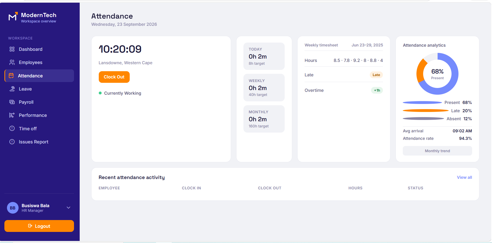

Team Project — HR Frontend
ModernTech HR Suite — Worker Portal
A team-built HR management system with separate HR-admin and employee self-service portals. I owned the Attendance, Leave, Time Off and Issue Reporting pages on the HR side — building the markup, the vanilla-JS logic, and the localStorage-backed data layer for each.